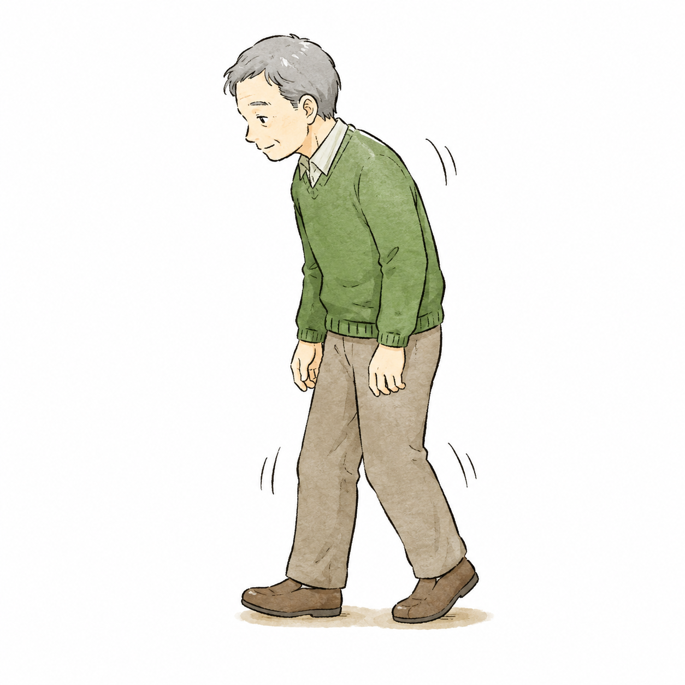
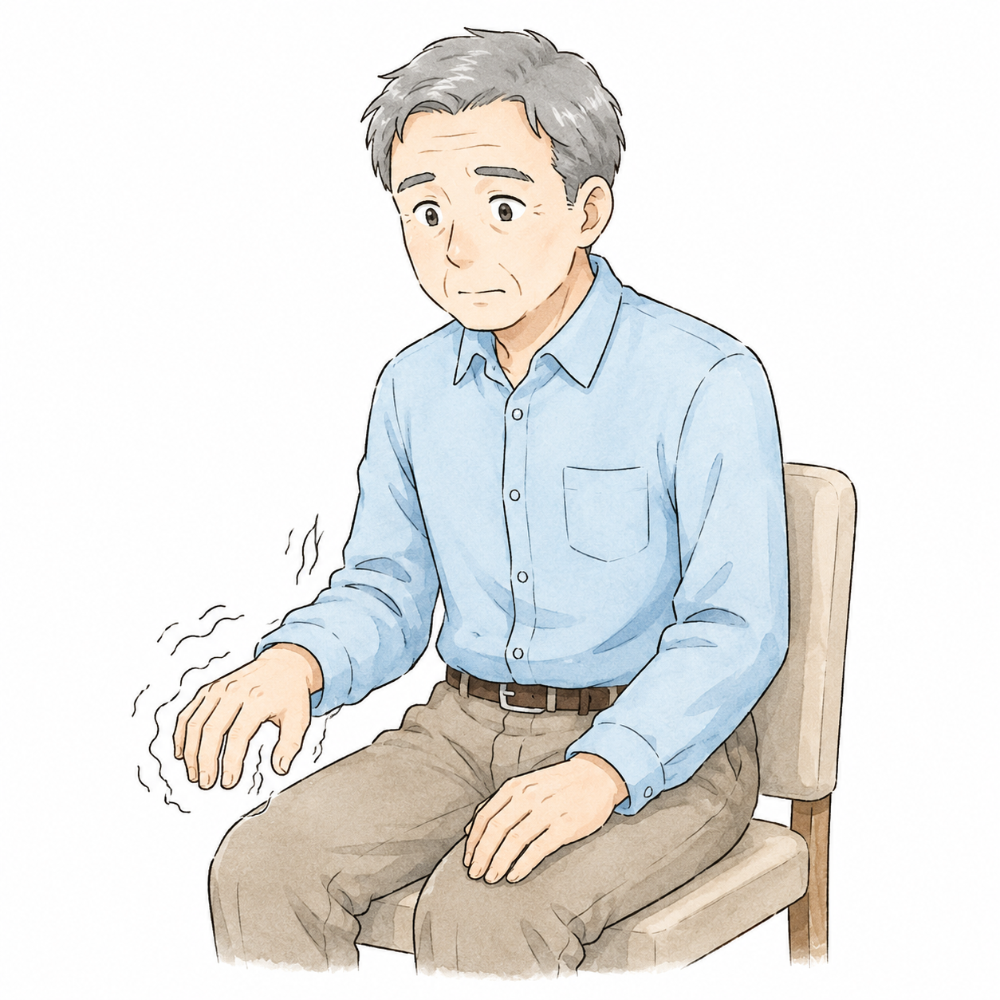
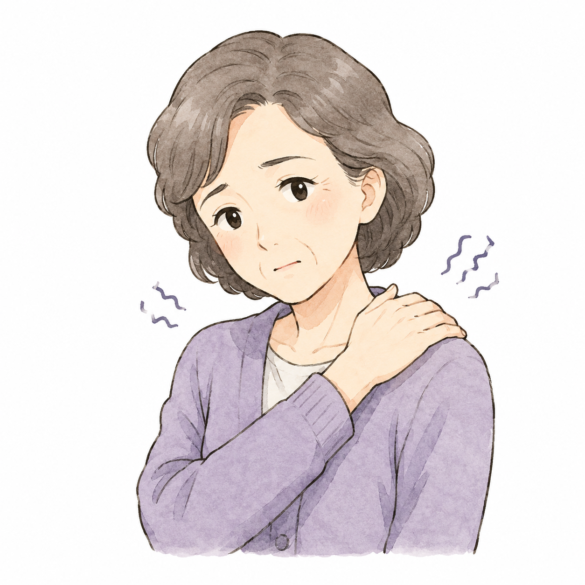
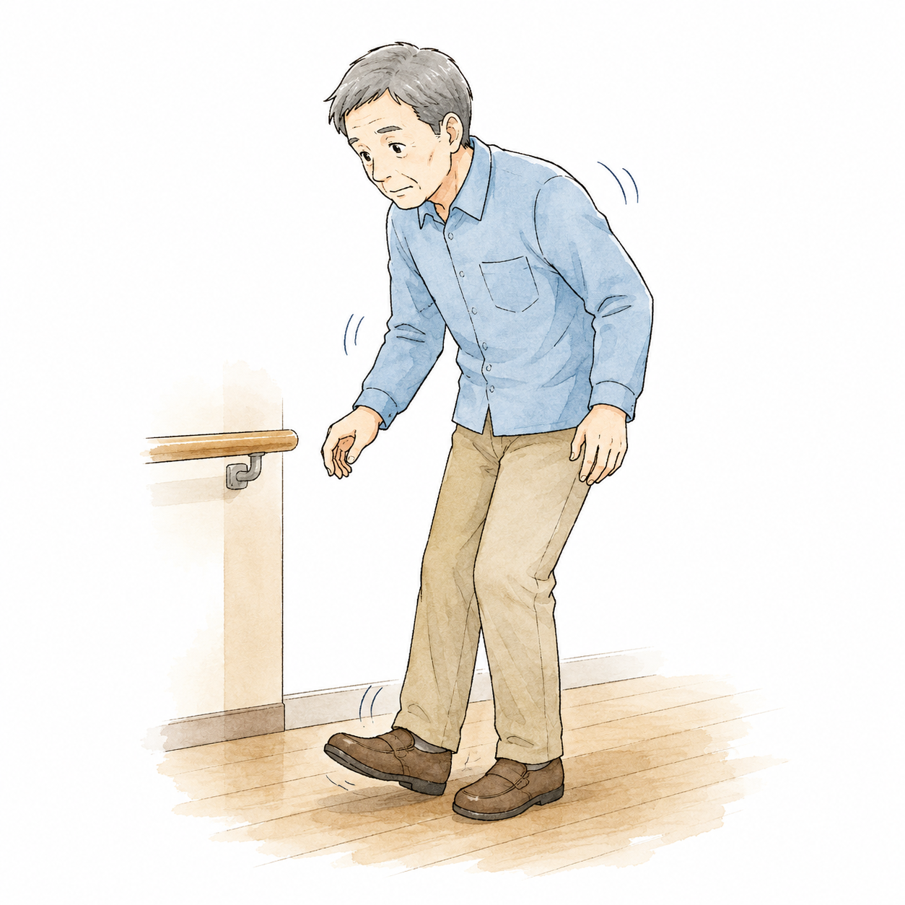
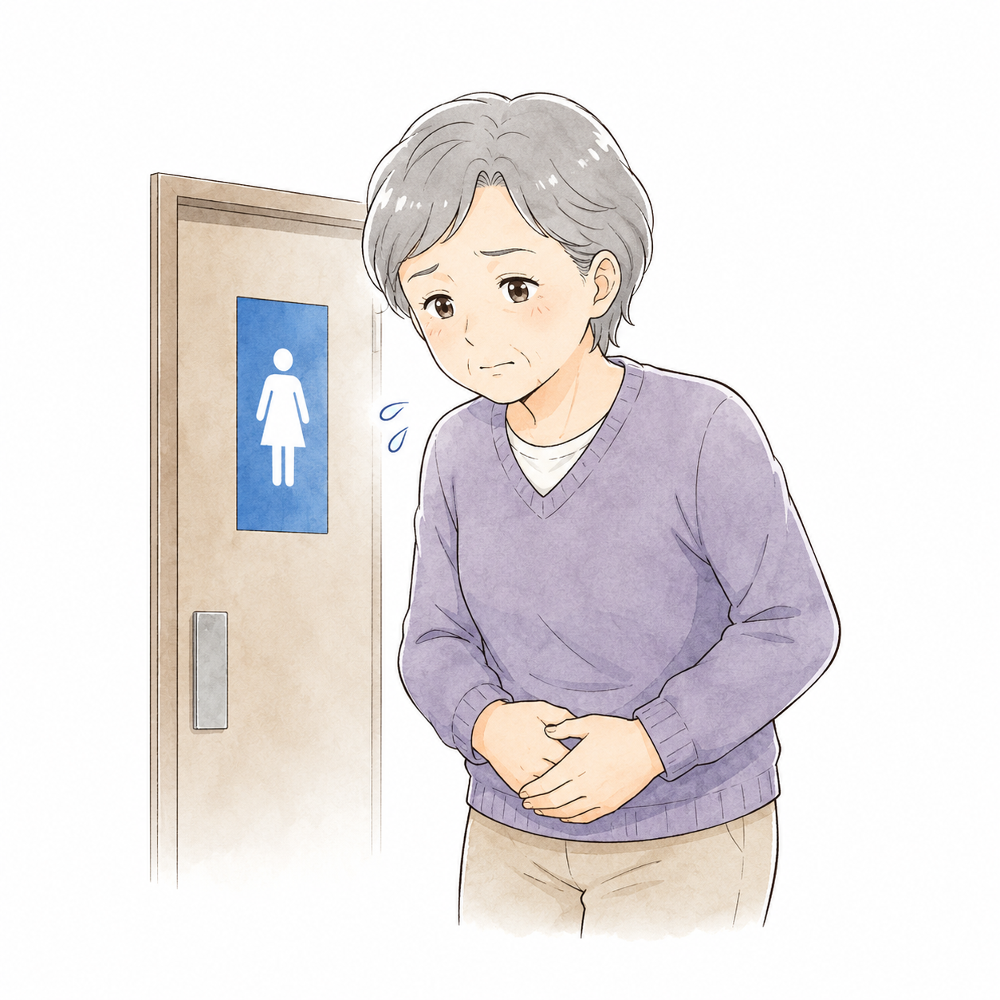
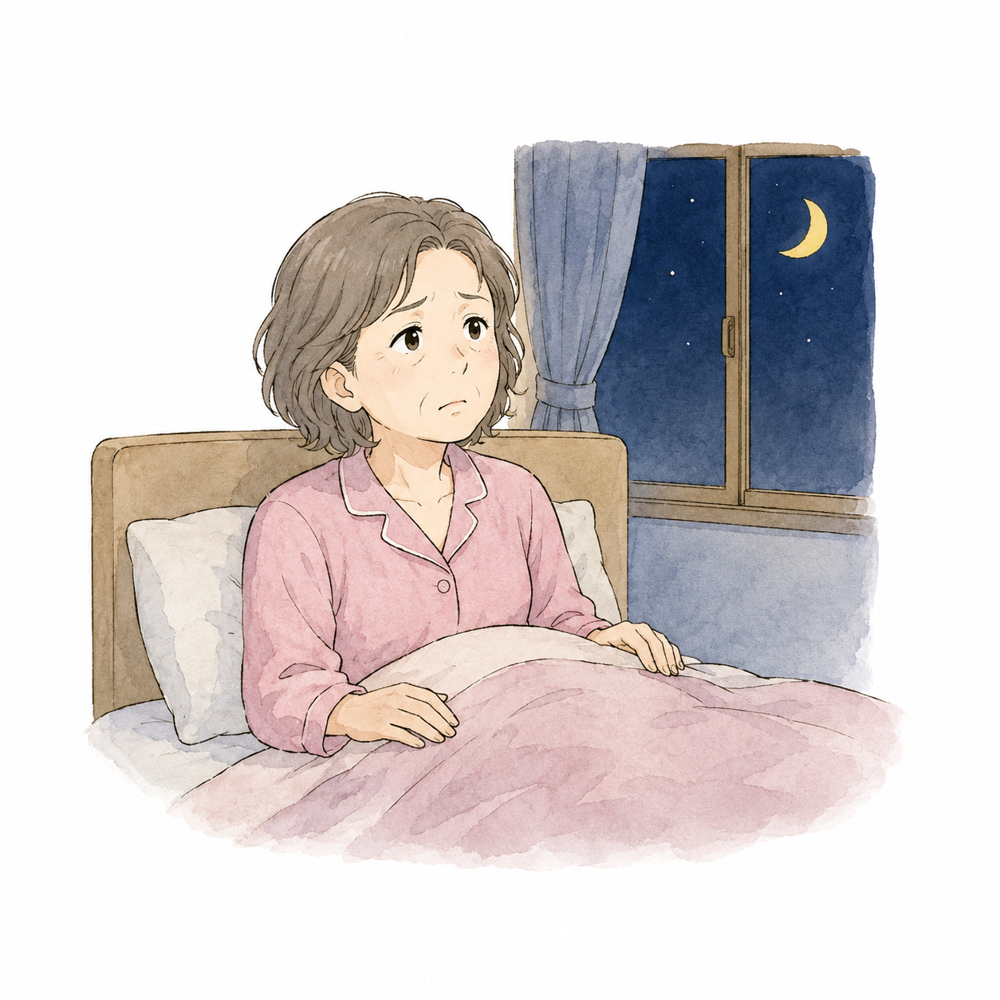
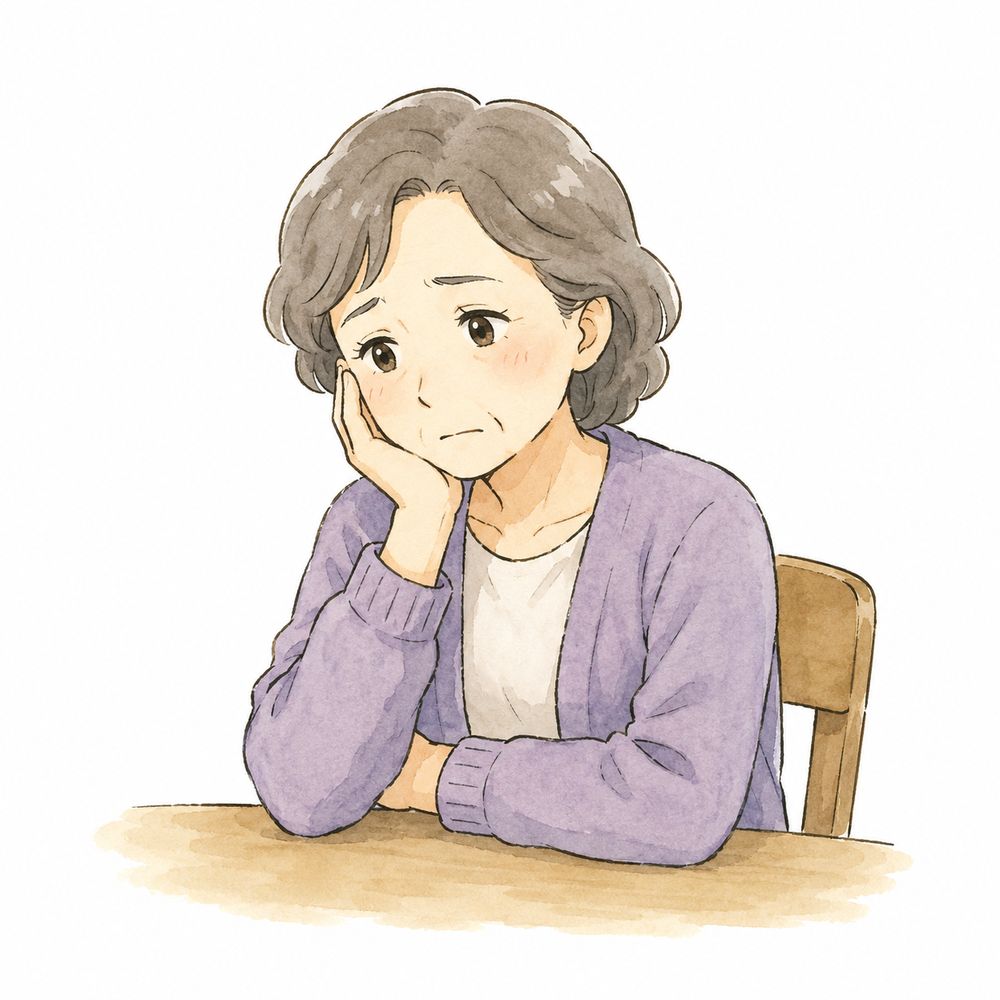
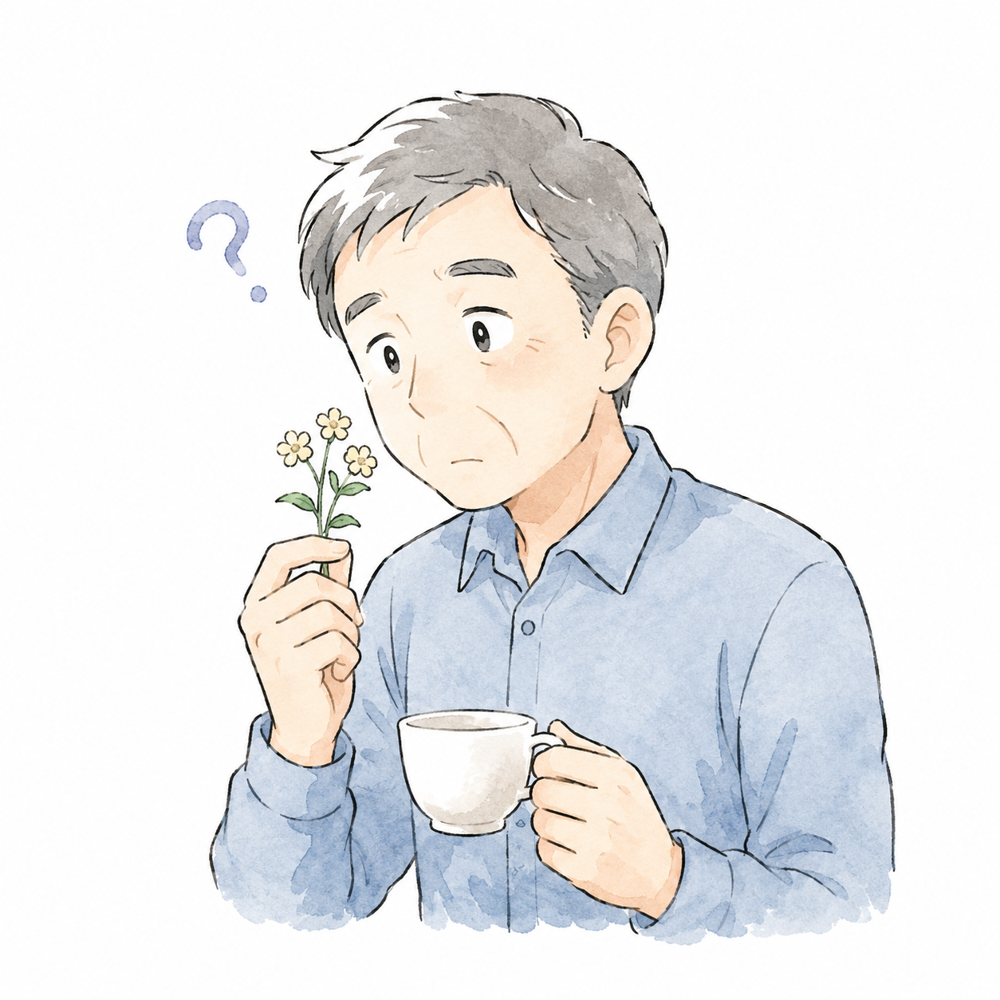

パーキンソン病の
主な症状

先生、パーキンソン病ってどんな病気なんですか?どんな症状が出るんでしょう?
いい質問ですね。まずは病気の仕組みから順番に説明していきましょう。
パーキンソン病は、脳の神経細胞が少しずつ弱っていくことで、体の動きやさまざまな働きに影響を及ぼす病気です。特に、ドパミンという神経伝達物質を作る細胞が減少することによって、特徴的な症状が現れます。

健康な脳
ドパミンを作る神経細胞が
たくさんある
パーキンソン病の脳
ドパミンを作る神経細胞が減り、
ドパミンも不足する
主な症状
パーキンソン病の症状は、大きく「運動症状」と「非運動症状」に分けられます。
運動症状
体の動きに関する症状

動作が遅くなる
無動・寡動(むどう・かどう)
歩く、字を書く、服を着るなどの動作がゆっくりになります。表情が乏しくなったり、声が小さくなったりすることもあります。

手足の震え
静止時振戦(せいしじしんせん)
何もしていないときに手や足が震えることが多く、動かそうとすると震えがおさまるのが特徴です。多くは片側の手から始まります。

筋肉や関節のこわばり
筋強剛・筋固縮(きんきょうごう・きんこしゅく)
体が硬くなり、思うように動かしにくくなります。肩や首がこるように感じたり、関節を曲げ伸ばしする際に抵抗を感じることがあります。

バランスがとりにくくなる
姿勢反射障害(しせいはんしゃしょうがい)
転びやすくなったり、歩きはじめに足が出にくくなる「すくみ足」が現れたりします。姿勢が前かがみになることもあります。
非運動症状
体の動き以外の症状

便秘や排尿のトラブル
自律神経症状
便秘がちになったり、頻尿になったりすることがあります。自律神経の働きが低下することで起こる症状で、病気の初期から現れることもあります。

睡眠障害
レム睡眠行動障害(れむすいみんこうどうしょうがい)など
夜中に目が覚めやすくなったり、悪夢を見たり、寝言や体の動きを伴うことがあります。日中の強い眠気が現れることもあります。

気分の落ち込みや不安
うつ症状・意欲低下
うつ症状や意欲の低下、不安感などがみられることがあります。これらは病気そのものや、生活上の変化への戸惑いから起こることもあります。

においを感じにくくなる
嗅覚障害(きゅうかくしょうがい)
においを感じにくくなる症状は、病気の初期に現れることが多いとされています。運動症状が出る前から、数年先行して現れることもあります。
症状の現れ方には個人差があり、すべての症状が一度に出るわけではありません。
適切な治療やリハビリを受けることで、症状を軽減しながら生活を続けることができます。